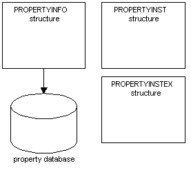

Network Monitor provides a PROPERTYINFO structure to define the properties of a protocol, and a PROPERTYINST, and PROPERTYINSTEX structure to define an instance of a property.

The parser allocates and fills-in the PROPERTYINFO structure for all the properties that a protocol supports. The parser passes the structure to Network Monitor where the structure is added to the protocol property database. The information in the PROPERTYINFO structure is used when parsing an instance of a property, and when formatting the data that is displayed in the Network Monitor UI.
Network Monitor allocates the PROPERTYINST and PROPERTYINSTEX structures when the parser attaches a property definition to an instance of a property.
The following procedure identifies the steps necessary to attach a property definition.
To attach a property definition
Network Monitor implements a PROPERTYINST structure when the parser uses the property data as it exists in the capture. Network Monitor implements a PROPERTYINSTEX structure when the parser must modify the property data in the capture.
Â
Â